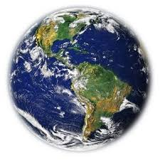
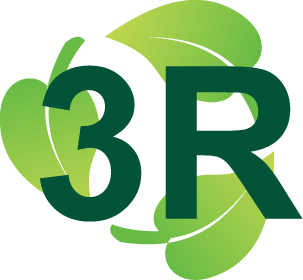
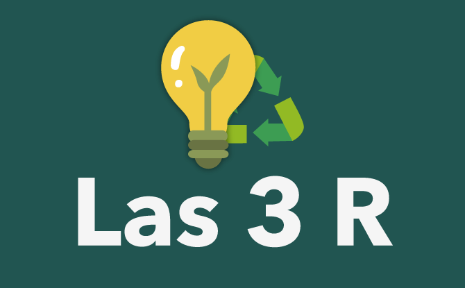
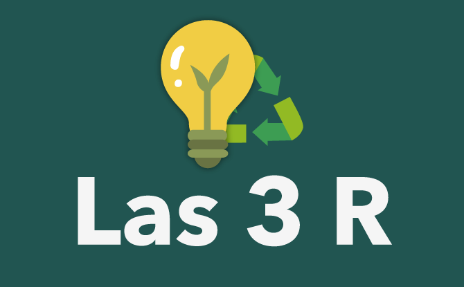
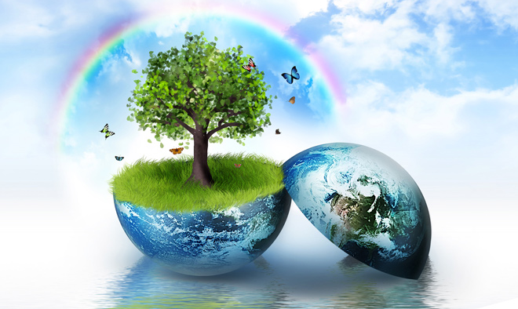

Cuidado del medio ambiente
Todo ser humano debería de preocuparse por el medio ambiente, por su cuidado y por protegerlo, porque creo que a nadie se nos pasa por alto la importante necesidad de hacer algo cuanto antes ante el a debacle que se avecina, sólo tenemos que fijarnos en todo lo que está ocurriendo en el Ártico para tomarnos en serio cómo estamos poniendo en peligro la naturaleza.
Hay quien se escuda ante la idea de que como no se haga nada a nivel global poco se va a conseguir, pero eso es una excusa que cae por su propio peso, pues todos sabemos la importancia que supone actuar localmente para conseguir un movimiento que posibilite y motive a que se haga algo a un nivel mayor.
No nos olvidemos que a veces con pequeños gestos, multiplicados por cientos de miles de personas, podemos colaborar y ser parte del cambio: ahorrar el agua, cuidando de no dejar el grifo abierto innecesariamente; apagar las luces y los electrodomésticos que no están en uso; reciclar nuestros residuos; comprar aparatos eléctricos eficientes; optar por coches híbridos o con combustibles alternativos.
Medidas preventivas
1. Consumir menos luz.
2. Mantener automóviles en buen estado.
3. Mantener bien cerradas las llaves de los grifos.
4. Desconectar aparatos eléctricos que no estén en uso.
5. Mantener las llantas de los automóviles bien infladas (para no forzar mas el motor, y así no generar tanto CO2)
6. No encender y apagar la luz, a cada momento si no es necesario.
7. Apagar las luces que no se utilicen.
8. si Algo no nos sirve (ropa, zapatos, juegetes) en vez de tirarlos, ver si se pueden donar, para ocupar menos espacio en basureros.
9. No utilizar papel en exceso.
10. las cosas "que no sirvan" utilizarlas en otras cosas, para no tener que tirarlas.

3 R
Las tres erres son:
1. Reducir
Reducir es la "erre" más importante ya que tiene el efecto más directo y amplio en la reducción de los daños al medio ambiente, y consiste en dos partes:
2. Reutilizar
Reutilizar significa alargar la vida de cada producto desde cuando se compra hasta cuando se tira. La mayoría de los bienes pueden tener más de una vida útil, sea reparándolos o utilizando la imaginación para darles otro uso.
3. Reciclar
Reciclar es la erre más común y menos eficaz. Se trata de rescatar lo posible de un material que ya no sirve para nada (comúnmente llamado basura) y convertirlo en un producto nuevo. Por ejemplo, una caja vieja de cartón se puede triturar y a través de un proceso industrial o casero convierte a papel nuevo.
 

Beneficios del cuidado del medio ambiente

Hay muchos beneficios en cuidar el medio ambiente, como por ejemplo ahorrar energía o dejar de contaminar. A continuación les dejare una lista de estos beneficios:
- Ahorrar energía.
- Reducir la contaminación del aire.
- Reducir la contaminación del ambiente
- Ayudar a vivir en un ambiente más limpio y sano.
- Reducir el crecimiento del agujero de la capa de ozono.
- Dejar de extinguir animales.
- Ampliar el hábitat de animales.